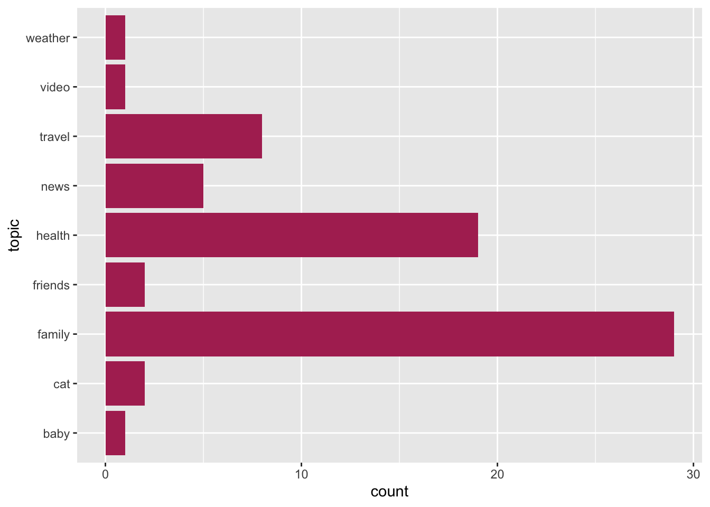

Basic Data Analysis
1 Introduction
In this document, we’ll mess around with R, Quarto and basic data analysis. We’ll be using the R libraries tidyverse and ggplot2 to ask and answer basic questions about our datasets.
The data I’m using was collected by me on Saturday, October 7, the first day of fall break, and it includes the day, time of day, person, and topic of each text I sent or received that day. The data was originally collected in a Google Sheet. Your data should have the same format though the time frame may be different. Add a link to your Google Sheet here.
2 Securing our data
Code
ID person action day time_of_day topic
1 1 Rob Received Saturday Night weather
2 2 Rob Received Saturday Night travel
3 3 Rob Sent Saturday Night travel
4 4 Rob Received Saturday Night travel
5 5 Rob Received Saturday Night travel
6 6 Rob Sent Saturday Night travelThe above code imports my CSV into the universe of this R file – now the R file can read and use this data. Above is the ‘head’ of the data: the first few rows of it. Because this file and your text data are both saved to your Desktop, the first few rows of your data should show up here.
3 Examining our data: work in pairs
Sometimes we don’t want to display something on our Viewer, we just want more information about our data. R allows you to do some basic data interviewing with just one line of code at a time. Type the following lines of code (the text before the #), one at a time, in your console. Compare what you get with a partner. To the right of the #, where it says “Comment here,” comment what you and your partner think each line of code does, based on what happens in your console. Important: do not copy and paste. Type the code into the console, one by one. Take your time, and make sure your partner is on the same page as you.
install.packages("tidyverse") #Comment herelibrary("tidyverse") #Comment hereinstall.packages("ggplot2") #Comment herelibrary("ggplot2") #Comment hereall_texts %>% nrow() #Comment hereall_texts %>% glimpse() #Comment hereall_texts %>% count(person) #Comment hereall_texts %>% filter(topic == "INSERT ONE OF YOUR TOPICS FROM YOUR DATA HERE") %>% count() #Comment here
4 Discussion break
- What is a %>% ? What does it do?
- Write a question here, in simple English, that describes what #8 answers for us:
5 Who did you text the most in this time period?
One of our prompts above answers this question. Let’s write a R code chunk to make it show up in our Viewer:
Based on this breakdown, your answer is: _______.
Discuss with your partner: how would you put any row of data where the ‘person’ is the above person into its own variable called ‘most_texts’? Hint: research how filter works. How would you check if you did this correctly? Once we know how to do this, we’ll add the correct line of code to the above code chunk.
6 What would a simple bar chart of topics look like ?

What is one takeaway for you from Figure 1?